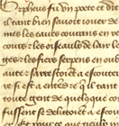

| Christine de Pizan | MANAGING THE PAGES | |
| SECTION ONE (94 FOLIOS) | ||
| 0. 2c-d, Table des dictiez en general 1. 3a-d, Prologue adreçant a la royne 2. 4a-21b, Cent balades 3. 21b-24b, Virelays: 16 poems 4. 24b-25a, Balades de plusieurs façons: 4 poems 5. 25b-27a, Une assemblee de plusieurs rimes auques toutes leonimes en façon de lay (Lay de vers leonimes) 6. 27a-28d, Ung Aultre Lay 7. 28d-34b, Rondelz: 67 poems 8. 34c-37c, Gieux a vendre: 71 poems 9. 37c-48a, Plusieurs Balades de divers propos (Aultres Balades): 50 ballades and 1 rondeau 10. 48b-49c, Une Complainte amoureuse 11. 49c-51a, Encore aultres balades: 5 ballades and 4 rondeaux 12. 51b-56c, L'Epistre au dieu d'Amours 13. 56d-58b, Une Autre Complainte amoureuse 14. 58c-71b, Le Livre du debat des .ij. amans 15. 71c-81a, Le Livre des .iij. jugemens 16. 81b-94a, Le Livre de Poissy | ||
| SECTION 2 (47 FOLIOS) | ||
|  125v Orpheus was a poet and... | 17. 95a-141c, L'Epistre Othea | |
| SECTION 3 (35 FOLIOS) | ||
| 18. 143b-177d, Le Livre du Duc des vrays amans | ||
| SECTION 4 (42 FOLIOS) | ||
| 19. 178a-219c, Le Livre du chemin de lonc estude | ||
| SECTION 5 (16 FOLIOS) | ||
| 20. 221a-236c, Le Livre de la pastoure | ||
| SECTION 6 (53 FOLIOS) | ||
| 21. 237a-254a, Le Livre des epistres du debat sus le Rommant de la Rose 22. 255d-257a, Une Epistre a Eustace Morel (Deschamps) 23. 257b-259b, Une Oroison de la vie et passion de Nostre Seigneur 24. 259c-261c, Proverbes moraulx 25. 261c-265b, Les Enseignemens (moraux) que Cristine donne a son filz 26. 265b-266d, Une Oroison de Nostre Dame 27. 267a-c, Les .xv. joyes Nostre Dame rimees 28. 268a-287c, Le Livre de Prudence 288c-289b, Table des rubriches du Livre de la cité des dames | ||
| SECTION 7 (87 FOLIOS) | ||
| 29. 290a-374a, Le Livre de la cité des dames | ||
| SECTION 8 (23 FOLIOS) | ||
| 30. 376a-396b, Cent balades d'amant et de dame 396b-398b, Lay de dame (Lay mortel) | ||
| SEARCH FOR FOLIO NUMBER | ||
| This site is maintained by Charlie Mansfield. |